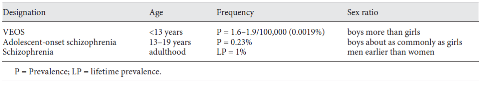

70 소아/청소년기 정신병
70.1 소아/청소년기 정신병의 개요
70.1.1 진단적 딜레마
소아/청소년기 조현병은 1930년대 말부터 다른 유형의 정신병으로부터 독립된 질환으로 분류되었다. DSM-II에서는 소아기 조현병의 범주에 정신병과 자폐장애가 모두 포함되어 있었다. 이후 Kolvin1 등[3,4]의 연구를 통해 소아기 조현병과 자폐장애가 명확히 구별되었다. DSM-III 이후 소아/청소년기 조현병은 성인과 같은 기준으로 진단된다.[5–7]
하지만 실제 임상에서 소아/청소년기 조현병, 특히 소아기 조현병 진단을 내리는 경우는 드문 편이다. 무엇보다 진단이 어렵다.[8,9] 정상발달과정의 아이일 지라도 환상을 보거나 망상, 고태적 사고에 사로잡히는 경우가 드물지 않으며, 이는 유치원 이후에나 사라지기 시작한다. 또한 조현병말고도 다양한 정신질환에 의해서도 유사한 증상들이 발생할 수 있다. 소아/청소년기에는 이렇게 진단의 경계가 모호하기 때문에 Kurma 등[10]은 “Multidimensionally impaired disorder”라는 명칭을 제안하기도 하였다.
진단이 잘못되어 불필요하거나 해로운 치료를 받을 가능성이 있을 뿐더러, 환자나 가족이 앞으로 감당해야할 사회적 낙인이나 편견도 만만하지 않다. 반면 이렇게 진단을 내리기를 꺼리는 경향 때문에 꼭 필요한 치료나 지원을 받지 못할 가능성도 있다. 진단 기준에 부합한다면 과감하게 진단을 내리되, 끊임없이 진단을 재평가하는 과정이 필요하다.[11]
70.1.2 정의, 분류 그리고 역학
조현병의 호발 시기가 후기 청소년기부터 초기 성인기에 이른다는 것을 감안하면, 굳이 청소년기 조현병을 성인 조현병과 구분할 필요가 있나 의구심이 든다. 보통 18세 이전 발병한 경우를 소아/청소년 조현병 혹은 조기 발병 조현병(Early-Onset Schizophrenia, EOS)이라고 하는데, 사실 18세란 기준에 생물학적 의미가 들어있는 것은 아니다.[12] 청소년기에 발병하는 조현병은 성인과 증상 및 경과 면에서 큰 차이가 없다. 최근들어 부쩍 조기 발병 조현병에 관심이 모아진 것은, 이들이 성인 조현병과 다른 질병을 앓고 있기 때문이 아니라, 그 전까지 정당한 관심을 받지 못했기 때문이다. 청소년기는 정서적으로 불안정하고, 인지적으로 미숙한 상태이기 때문에 소소한 정신병적 증상이 나타나더라도 진지하게 받아들여지지 않았고, 따라서 조현병 진단이 내려지는 비율도 적었다. 그러다가 조현병 환자의 조기 발견과 1차 예방에 대한 관심이 급증하면서 청소년기 환자가 조현병으로 진단되는 비율도 높아지기 시작하였다. 또한 자아를 찾아나서고, 사회에서의 정체성을 확립해가는 도중에 있는 상황에서 조현병에 걸렸을 때 수반되는 까다로운 문제들이 산적하면서, 청소년기 환자들은 차별화된 치료적 접근을 필요로 한다.
이에 비해 12세 이전 발병으로 정의되는 소아기 조현병(Childhood-onset schizophrenia, COS) 혹은 초조기 발병 조현병 (Very-Early-Onset Schizophrenia, VEOS)은 좀 다른 의미를 갖는다.[13] 조현병이 12세 이전에 발병하는 경우는 극히 드물다. 이들은 증상이 심하며, 장기적 예후도 불량한 편이다. 환경적 영향에 그다지 노출되지 않았기 때문에, 유전적 영향이 두드러지게 나타난다. 이들의 뇌는 역동적으로 변화하는 와중이기 때문에, 조현병과 관련된 신경발달학적 이상을 좀더 가까이 관찰할 수 있다. 일반적으로 소아기까지는 회백질의 용적이 늘어나다가 청소년기에는 오히려 감소하는 궤적을 밟으며, 이는 불필요한 시냅스를 솎아내는 가지치기 과정(pruning)때문이라고 이해된다. McGlashan과 Hoffman [14]은 이 과정에서의 과도한 가지치기때문에 피질의 연결성이 감소하고, 그것이 조현병이 원인이 될 수 있다고 주장한다. 그러나 초조기 발병 조현병은 가지치기가 시작되기도 전에 발병한다는 점에서 청소년기 이후에 발병하는 경우와는 선을 긋는다. 따라서 연구자들은 소아기 조현병을 집중적으로 연구함으로써 조현병의 신경발달학적 가설의 보다 직접적인 증거를 얻을 수 있을 것이라 믿는다.[15]
조현병의 평생 유병율은 약 0.6 - 1%정도, 연간 발생률은 10,000명당 1-2례로 보고되고 있는데[16], 이중 10세 이전 발병이 0.5-1%, 15세 이전 발병이 4% 정도를 차지한다. 소아기 발병 조현병 환자가 40,000명당 한 명꼴이란 통계도 있다.[8] 소아청소년 정신건강의학과 환자 중 조현병의 비율은 소아기 1-2%, 청소년기는 5% 정도 된다.(그림 70.1 )[17]

소아청소년기 조현병의 남녀 비에 대해선 견해가 엇갈린다. 일반적인 조현병에서 남성의 발병연령이 더 낮은 것으로 알려져 있는데, 그렇다고 해서 소아청소년 조현병이 압도적으로 남자가 많은 것은 아니다. 다만 14세 이전 발병만 보면 남녀 비율이 2:1 정도라고 한다.
EOS에서는 급성(acute) 발병과 점진적(insiduous) 발병 모두를 볼 수 있으나 VEOS는 대개 점진적 발병 양상을 보인다.[18] 점진적 발병일 때는 비특이적이고 다양한 “전구 증상”이 나타난다. 이는 정상 소아에서도 흔히 나타나는 현실과 환상의 혼동, 마술적 사고, 지각적 혼란 등과 잘 구별되지 않기 때문에 일찍 발견하는데 어려움을 겪는다. 경과는 성인에서와 마찬가지로 발병 후 제대로 회복하지 못하고 퇴행에 빠져버리는 경우와 비교적 급성 발병 후 재발과 호전을 반복하는 삽화성 경과를 밟는 경우가 있다.[17] 그러나 일찍 발병할 수록 삽화 구분이 분명하지 않다.
소아청소년기에 발병한 조현병은 예후가 좋지 않아서 절반 이상이 사춘기 및 초기 성인기에 광범위한 장해를 동반한 불량한 만성 경과를 보인다.[19,20] VEOS는 EOS보다 더 예후가 더 불량하다.[20] 예후가 불량한 이유는 유전적 요인의 높은 비중 및 더욱 광범위한 신경발달학적 이상때문으로 여겨지고 있지만, 질병으로 인해 정상 발달과정을 제대로 거치지 못해 증상이 가라앉더라도 여전히 사회적응을 하지 못하게 되는 것과도 관련이 있다.[21]
70.1.3 발달학적 측면
소아/청소년 조현병은 환자의 정신사회적 및 생물학적 발달에 파괴적인 영향을 미친다. 따라서 이 시기의 질병을 이해하고 치료하기 위해서는 발달 과정에 대한 지식이 필요하다. 소아청소년기에는 정신, 인지기능의 성숙 과정이 진행되는데, 성인에 비해 유연성과 학습 능력이 높은 반면에 그만큼 자극에 대한 취약성이 높다.
동물 실험에서 고차적인 인지 기능은 변연계-전전두엽 축의 성숙과정에 병행한다고 보고되었다. 인간에서 변연계-전전두엽의 성숙은 16-18세까지 이어진다.[22] 이처럼 늦게까지 성숙이 진행되는 것은 변화하는 환경 및 과업에 유연한 대응을 하는데 유리하다. 인간이 독립적인 개체로 성장하기 위해선 너무나 알아야 할 것들이 많고, 이는 소아청소년기가 다른 동물에 비해 유달리 길어진 원인이 된다. 배워야할 것이 더 많은 시기 동안 대뇌는 성숙을 최대한 늦춤으로써 유연성을 확보하는 것이다. 이런 시기에 정신활성 약물 혹은 조현병이라는 심각한 정신질환에 노출되는 것은 예기치 않은 방향으로 정신사회적 성숙과정을 왜곡시킬 가능성이 있다. 유연한 만큼 유해한 자극에 민감하게 반응하여 비정상적 방향으로 어긋나기도 쉽다는 뜻이다.[23]
많은 소아청소년 조현병 환자들이 정체성/성적 주체성의 발달, 학업 능력, 가족 또는 교우 관계에서 엄청난 어려움을 겪는다. 청소년기의 가장 중요한 과제는 부모로부터의 정서적 독립과 자율성의 확보이다. 현실파악력 저하와 정신병적 불안은 환상세계로 도피하도록 유도하며, 또래 친구들로부터 거절당하면서 사회성을 발달시킬 기회를 잃는다. 게다가 질병을 앓는 환자에 대한 과도한 보호와 간섭으로 자율성을 확보할 여유도 없어진다. 이러한 상황에 대한 불만족, 내적 불안 등을 해소하기 위해 약물/물질 남용으로 이어질 위험이 크다.
70.2 임상 양상 및 진단
2013년 미국 소아청소년 정신의학회는 소아/청소년 발병 조현병을 진단할 때 성인의 진단기준을 그대로 적용해도 무방하다고 결론지었고, DSM과 ICD-10 역시 소아/청소년 조현병이라고 해서 따로 진단기준을 두고 있지는 않다.[9] 그러나 실제 임상양상은 성인 환자와 비교하여 몇 가지 차이를 보이는데, 이는 주로 환자의 발달단계에 따른 것으로 생각된다.
발병 연령이 낮아질수록 인지, 정서, 언어와 말, 운동의 장해 및 사회기능이 더 떨어진다. 다양한 사고 장애가 존재하는데 환자가 말로 잘 설명하지 못하기 때문에 이를 평가하기 어렵다. 정신적 문제가 없는 정상 소아라도 나이 든 아이나 성인에 비해 사고장애 점수가 높은 편이다.[7] 따라서 정확한 진단을 위해서는 해당 연령의 독특한 사고형태를 숙지하는 것이 매우 중요하다.
망상은 다양한데 환상적 내용이 많고, 체계적 망상은 12세 이하 소아에서는 매우 드물다. 성인과 마찬가지로 환각 중에는 환청이 많으며, 주로 협박, 간섭, 명령하는 소리가 많고 여러가지 비언어적인 소리도 드물지 않다. 소아 환자는 환시도 흔하다. COS를 대상으로 한 연구에서 95%가 환청을, 80%가 환시를 보고하였다.[24] 환시를 보이는 아이들에게서 환촉이나 환후가 동반되기도 한다. 환시의 증가는 전반적인 뇌기능 저하 및 심한 임상적 장해와 상관이 있었다.[24]
사고 장애와 연계되거나 혹은 별도로 언어 장애가 흔하며, 특히 8세 이하의 소아에서 언어장애가 동반되면 자폐증(autism)과 감별이 중요하다. 자폐 스펙트럼 장애(ASD)에 동반된 정신병적 증상은 변동이 심하나 이들이 임상상을 주도하지는 않는다.[10,25] 몸동작의 어색함과 부조화, 괴이한 자세, 혼미, 긴장증 등 다양한 행동장애가 발현되며, 괴이한 상동증, 강박 행동, 예측불가능한 의례적 (ritual) 행동도 관찰된다.[17] 음성 및 정서증상도 비교적 일찍 나타나며, 정서의 둔마, 자극과민성, 두려움/의심, 현저한 무관심과 함께 말 수가 준다. 부적절한 정서 반응으로 친구들에게 배척당하여 사회적으로 고립되며, 이는 음성증상을 더욱 악화시킨다.
70.3 치료의 일반 원칙
소아청소년 환자라고 해서 성인 환자와 치료 지침이 달라지진 않는다. 본서에서는 Abidi 등 [26]이 NICE 지침을 참고하여 만든 캐나다 치료지침을 소개한다.
70.3.1 초발 환자
- 조기발견을 위해 4주 이상 정신병적 증상이 지속되는 소아청소년은 즉각 정신건강 전문 서비스나 조기개입 서비스에 의뢰한다.
- 항정신병 약물의 사용은 일차 의사가 독단적으로 수행해서는 안 되며, 반드시 소아청소년 정신과 수련을 받은 의사의 자문을 구한다.
- 심리사회적 치료와 함께 항정신병 약물치료를 제공한다. 약물 선택과 복용 방식은 의사의 제안을 거쳐 환자의 보호자가 혹은 환자 및 보호자가 함께 상의하여 결정한다. 치료 효과와 발생 가능한 부작용에 대해 환자가 이해할 수 있는 수준의 정보를 제공한다.
- 약물치료 개시 또는 교체 전에 심전도 검사를 시행한다. 특히 동반질환이나 과거력, 가족력이 있으면 특히 권장된다.
- 허가 용량의 최소 수준에서 투여를 시작하여 점차 증량한다. 소아청소년에게 허가된 용량이 성인과 다를 수 있다. 소아청소년에게 사용이 허가되지 않은 약물을 써야할 때에는 성인 권장 용량의 하한선에서 시작한다. 만약 허가 범위를 넘는 용량을 사용해야 한다면 그렇게 결정한 근거를 기록한다. 약물의 효과를 확인하기 위해선 유효 용량에서 최소 4~6주 투여해보아야 한다.
- 약물치료 기간 동안 신체 건강과 항정신병 약물의 효과를 추적하는 주체를 명확히 한다.
- 환자나 보호자가 원하지만 의료기관에서 처방되지 않는 치료에 대해서 논의한다. (예를 들어 대체의학) 그 안전성과 효과, 사용 중인 약물과 심리사회적 개입에 미칠 수 있는 영향 등을 논의한다.
- 대마초, 알코올, 담배, 처방 및 비처방 약물 사용에 대해 논의하고 이들이 항정신병 약물 치료를 방해할 가능성과 정신병 증상을 악화시킬 가능성에 대해 논의한다.
- 약물 교체를 위해 일시적으로 사용하는 것 말고는, 항정신병 약물을 병용하지 않는다.
70.3.2 급성기가 지난 후
- 약물치료로 얻은 이익과 부작용을 주기적으로 평가한다. 정신병적 사화가 가져온 충격을 되돌아보고, 현실적이고도 낙관적인 시각에서 회복에 도달하기 위한 계획을 세운다. 환자 및 보호자에게 1,2년 내에 약물을 중단하면 재발의 위험이 매우 크다는 것을 강조한다
- 만약 약을 끊거나 줄이려 할 때는 가급적 서서히 해야하며, 주기적으로 재발의 징조를 살펴보아야 한다. 약을 끊은 이후에도 적어도 2년 동안 재발의 징조를 유심히 관찰하여야 한다.
70.3.3 재발하였을 때
- 즉시 항정신병 약물치료, 인지행동치료 및 가족 치료를 함께 시행한다. 약물 사용 중에 재발하였다면 현재 사용 중인 약물을 재검토한다.
- 만약 입원치료가 필요하다면, 발달 수준과 연령에 맞는 환경에서 시행되어야 한다.
70.3.4 급성 공격성이나 초조에 대한 치료
급박한 상황에서 진정이나 강박은 소아청소년 환자에게 이런 개입을 하는데 필요한 훈련과 경험을 갖춘 전문가가 해야 한다. 이전에 항정신병 약물을 사용한 적이 없는 환자라면, 급성 근긴장이상 반응의 위험이 높으므로 haloperidol과 같은 고강도 항정신병 약물을 사용할 때 특별히 주의한다.
진정이 된 후에는 환자와 보호자에게 그들이 겪었던 경험에 대해 이야기할 기회를 준다. 진정이나 강박을 해야만 했던 이유를 명확하게 설명하고 그 경위를 기록한다.
70.3.5 치료 반응을 보이지 않는 경우
- 적어도 두 가지 이상의 항정신병 약물을 각각 6~8주간 치료했는데도 적절한 반응을 보이지 않는다면 클로자핀을 사용한다.